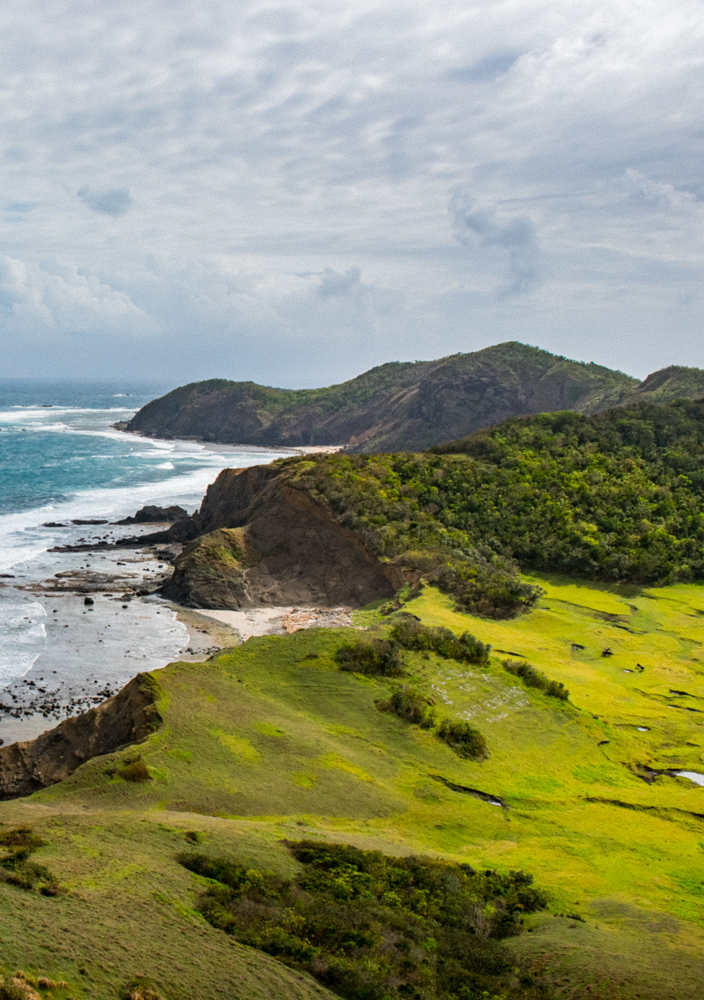

Region 2, also known as Cagayan Valley, is a region located in the northeastern part of Luzon, the largest island in the Philippines. It is composed of five provinces: Batanes, Cagayan, Isabela, Nueva Vizcaya, and Quirino. Cagayan Valley is known for its diverse landscapes, agricultural productivity, historical sites, and natural wonders.
Batanes is the northernmost province of the Philippines and is composed of a group of islands. It is known for its breathtaking scenery, rolling hills, picturesque cliffs, and traditional stone houses called Ivatan houses. Batanes offers opportunities for hiking, biking, and exploring its unspoiled beaches.
Cagayan is the largest province in Cagayan Valley and is situated along the northeastern coast of Luzon. It is known for its stunning beaches, pristine islands, and vast agricultural lands. The province offers activities such as river rafting in the Cagayan River, exploring the Callao Caves, and visiting historical sites like the Saint Peter and Paul Cathedral in Tuguegarao City.
Isabela is the largest province in terms of land area in the Philippines. It is known for its agricultural productivity, particularly in rice and corn production. Isabela boasts scenic landscapes, including mountains, forests, and waterfalls. The province is home to the Northern Sierra Madre Natural Park, where visitors can engage in outdoor activities such as trekking and bird watching.
Nueva Vizcaya is a landlocked province located in the southern part of Cagayan Valley. It is known for its mountainous terrain, verdant forests, and rich biodiversity. The province is home to the breathtaking Mount Pulag, the third-highest peak in the Philippines. Nueva Vizcaya offers opportunities for eco-tourism, including exploring waterfalls, caves, and hot springs.
Quirino is a province known for its lush forests, mountains, and scenic rivers. It is often referred to as the "Forest Heartland of Cagayan Valley" due to its abundant flora and fauna. The province offers outdoor activities such as trekking, hiking, and spelunking. Quirino is also home to the Aglipay Caves and Campsite, a popular destination for adventure seekers.
Cagayan Valley is a region of natural beauty, cultural heritage, and agricultural significance. Its diverse landscapes, from stunning coastlines to majestic mountains, provide a range of outdoor activities and scenic attractions. The region's rich history is evident in its historical sites and traditional practices, offering visitors a glimpse into its cultural heritage. With its natural wonders, agricultural abundance, and warm hospitality, Cagayan Valley is a destination that caters to nature lovers, adventure enthusiasts, and those interested in immersing themselves in the region's cultural treasures.